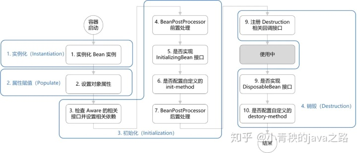
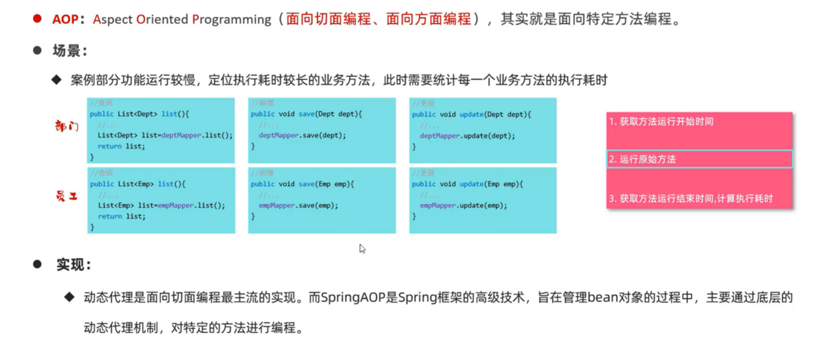
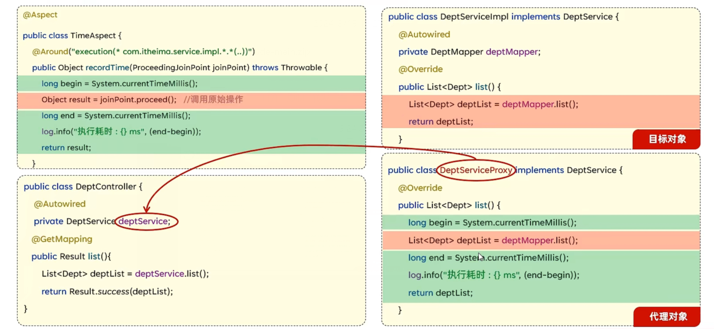
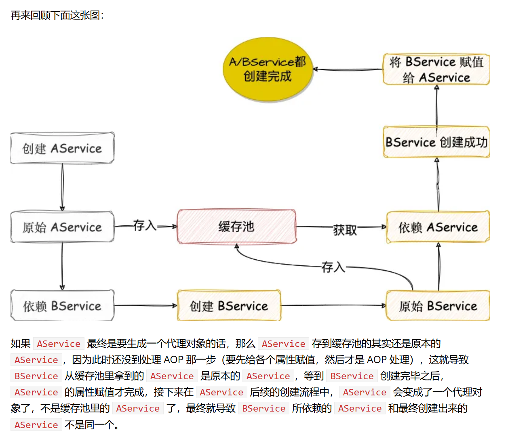
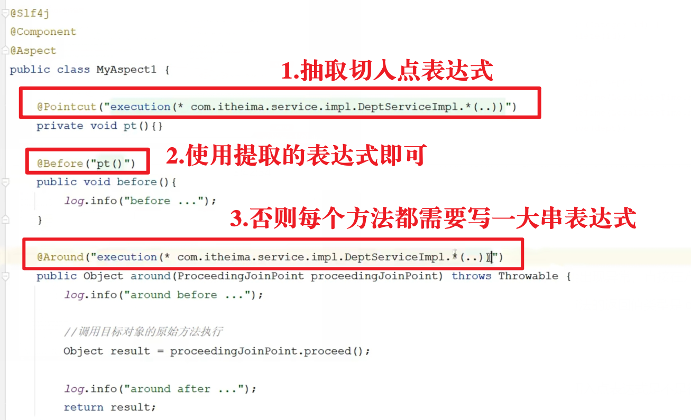
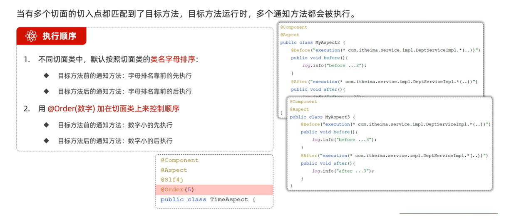
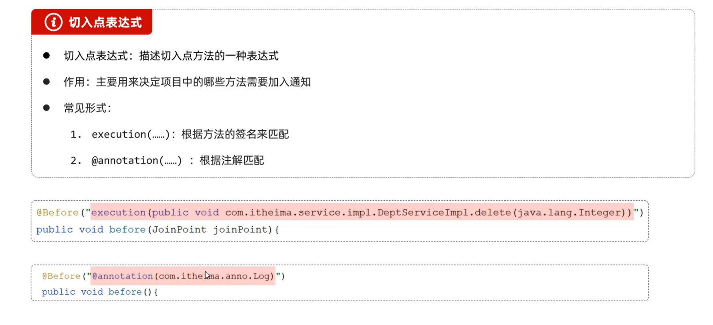
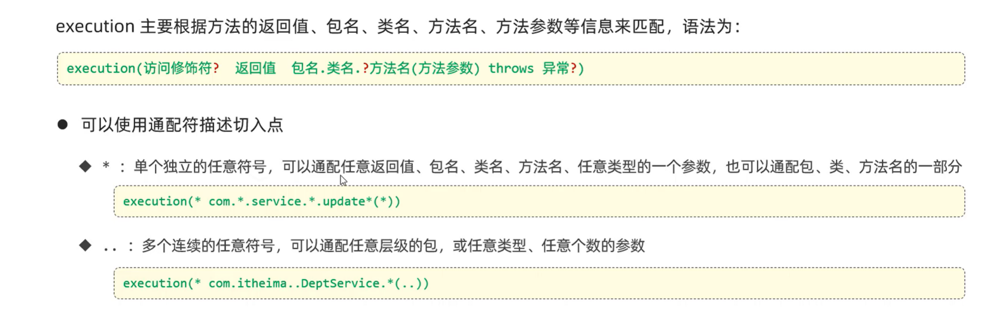
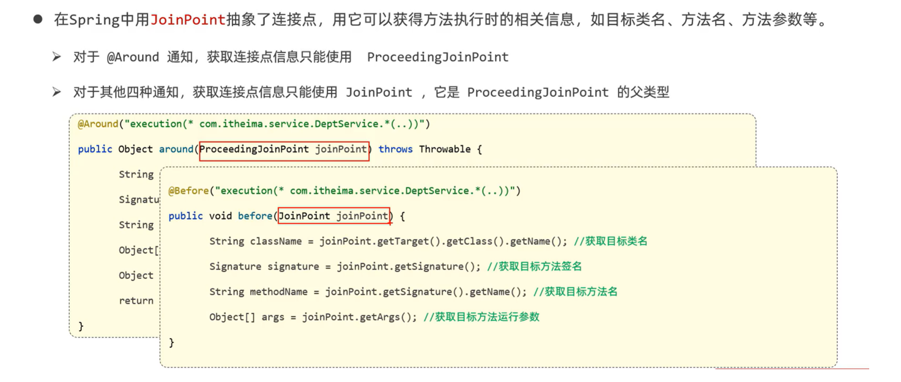

Spring：IoC、AOP、事务
一、控制反转（IoC）和依赖注入（DI）
1. 控制反转
Ioc—Inversion of Control，即“控制反转”，不是什么技术，而是一种设计思想。在Java开发中，Ioc意味着将你设计好的对象交给容器控制，而不是传统的在你的对象内部直接控制。
谁控制谁，控制什么：传统Java SE程序设计，我们直接在对象内部通过new进行创建对象，是程序主动去创建依赖对象；而IoC是有专门一个容器来创建这些对象，即由Ioc容器来控制对象的创建。
谁控制谁？当然是IoC 容器控制了对象；控制什么？那就是主要控制了外部资源获取（不只是对象包括比如文件等）。
这里提到的“外部资源”指的是IoC（Inversion of Control，控制反转）容器之外的资源。
为何是反转，哪些方面反转了：有反转就有正转，传统应用程序是由我们自己在对象中主动控制去直接获取依赖对象（new关键字），也就是正转；而反转则是由容器来帮忙创建及注入依赖对象。
为何是反转？因为由容器帮我们查找及注入依赖对象，对象只是被动的接受依赖对象，所以是反转；哪些方面反转了？依赖对象的获取被反转了。
2. 依赖注入
2.1 什么是依赖注入
DI—Dependency Injection，即“依赖注入”：组件之间依赖关系由容器在运行期决定，形象的说，即由容器动态的将某个依赖关系注入到组件之中。依赖注入的目的并非为软件系统带来更多功能，而是为了提升组件重用的频率，并为系统搭建一个灵活、可扩展的平台。通过依赖注入机制，我们只需要通过简单的配置，而无需任何代码就可指定目标需要的资源，完成自身的业务逻辑，而不需要关心具体的资源来自何处，由谁实现。
理解DI的关键是：“谁依赖谁，为什么需要依赖，谁注入谁，注入了什么”
谁依赖于谁：当然是应用程序依赖于IoC容器；
为什么需要依赖：应用程序需要IoC容器来提供对象需要的外部资源；
谁注入谁：很明显是IoC容器注入应用程序某个对象，应用程序依赖的对象；
注入了什么：就是注入某个对象所需要的外部资源（包括对象、资源、常量数据）。
在依赖注入（DI）的上下文中，提到的“外部资源”并不严格地指IoC（Inversion of Control，控制反转）容器之外的资源，而是相对于被注入对象而言，该对象在执行其功能时所需要但不直接创建或管理的资源。这些资源可以是其他对象、数据访问接口（如数据库连接）、文件句柄、网络资源、配置信息等，它们对于被注入对象来说是外部的，因为它们不是由该对象自身直接创建或控制的。
2.2 依赖注入的方式
构造器注入
这个简单，就是单纯的构造方法，
MyDependency是一个类，然后我通过MyClass类对myDependency这个对象进行初始化。1
2
3
4
5
6
7public class MyClass {
private MyDependency myDependency;
public MyClass(MyDependency myDependency) {
this.myDependency = myDependency;
}
}setter方法注入
这个和构造器的很像，不过用的是set方法。构造器注入能确保两个对象（或者说类）具有绑定关系，而setter的偏向灵活性。
1
2
3
4
5
6
7public class MyClass {
private MyDependency myDependency;
public void setMyDependency(MyDependency myDependency) {
this.myDependency = myDependency;
}
}接口注入
通过对象实现一个特定的接口来注入依赖。接口中定义了注入依赖的方法，对象通过实现该接口来接收依赖项。
1
2
3
4public interface DependencyInjector {
void injectDependency(MyClass myClass, MyDependency myDependency);
}
// 实际应用中，接口注入可能通过框架的特定机制来实现，而不是直接这样使用在
DependencyInjector接口的实现类中，需要重写injectDependency方法，injectDependency方法应该包含注入对象的逻辑注解注入
这个没什么好说的，就是
@autowired和@resource这两个注解了。一个主打byType注入，一个主打byName注入。可以参考下文第二节：Bean的第6节。
可以参考的文章，我基本写的差不多了：依赖注入和控制反转的理解，写的太好了。-CSDN博客
3. 循环依赖
循环依赖是bean互相引用的错误，在spring中可以通过三级缓存自动解决，但同时也存在三级缓存不能自主解决的情况。
官方文档写的很好，必看内容：再谈谈 Spring 中的循环依赖 - spring 中文网 (springdoc.cn)，这里就简单的写一下三级缓存机制方便速查。
Spring框架中的三级缓存机制
在Spring框架中，三级缓存机制主要用于解决单例Bean的循环依赖问题。这三级缓存分别是：
- 一级缓存（SingletonObjects）：用于存放完全初始化好的Bean实例。
- 二级缓存（earlySingletonObjects）：存放的是半初始化的Bean实例，这些Bean已经完成了实例化过程，但尚未进行属性填充和初始化方法调用。
- 三级缓存（singletonFactories）：存放的是能够生成Bean实例的 Lambda 表达式，这些Lambda 表达式在被调用时会返回相应的Bean实例，并且这些实例会被放入二级缓存中。
在一级缓存和二级缓存中，缓存的 key 是 beanName，缓存的 value 则是一个 Bean 对象，但是在三级缓存中，缓存的 value 是一个 Lambda 表达式，通过这个 Lambda 表达式可以创建出来目标对象的一个代理对象。
当Spring容器在创建Bean时遇到循环依赖，它会首先尝试从一级缓存中获取Bean实例，如果获取不到，则尝试从二级缓存中获取半初始化的Bean实例。如果二级缓存中也没有，Spring会查看三级缓存中是否有对应的工厂对象，如果有，则通过工厂对象生成Bean实例，并将其放入二级缓存中，同时返回给需要的Bean进行依赖注入。
详细的说：
也是Bean A 和 Bean B，当 B 创建的时候发现需要 A 的时候，此时 B 需要从二级缓存或者三级缓存中拿到 A，（从二级或者三级是由Spring容器在Bean的生命周期管理中自动完成的，也就是说，B 不需要知道 A 是否需要动态代理，只知道按照一级二级三级的顺序去找，这里也就是 A 的AOP提前在了初始化之前）最终 B 初始化 完成放入一级缓存，A 再从一级缓存中拿到 B ，完成 A 的初始化，然后再将 A 放入一级缓存。
二、Bean
1. 八股：bean生命周期
在上一节讲了，控制反转和依赖注入对bean的操作，那么bean是如何被创建出来，被使用，被销毁的？
Bean 的生命周期概括起来就是 4 个阶段：
- 实例化（Instantiation）
- 属性赋值（Populate）
- 初始化（Initialization）
- 销毁（Destruction）

- Spring对Bean 进行实例化．
- Spring 将值和Bean的引用注入进Bean对应的属性中。
- 如果Bean 实现了
BeanNameAware接口， Spring 将bean 的ID 传递给setBeanName()接口方法． - 如果Bean实现了
BeanFactoryAware接口（前置处理）， Spring 将调用setBeanFactory()接口方法，将BeanFactory容器实例传入． - 如果Bean 实现了
ApplicationcontextAware接口 Spring 将调用setApplicationContext()接口方法，将应用上下文的引用传入。 - 如果Bean实现了
BeanPostProcessor接口Spring 将调用它们的postProcessBeforeInitialization接口方法。 - 如果Bean 实现了
InitializingBean接口，Spring 将调用它们的afterPropertiesSet()接口方法． 类似地，如果Bean 使用init-method声明了初始化方法，该方法也会被调用。 - 如果Bean 实现了
BeanPostProcessor接口（后置处理）， Spring 将调用它们的postPoressAfterInitilization方法． - 此时此刻Bean 已经准备就绪，可以被应用程序使用了。 它们将一直驻留在应用上下文中，直到该应用上下文补销毁。
- 如果Bean实现了
DisposableBean接口，Spring 将调用它的destroy()接口方法。同样，如果Bean 使用destroy-method声明了销毁方法，方法也会被调用。
背起来困难可以看介绍：
BeanPostProcessor是什么？
BeanPostProcessor是Spring IOC容器给我们提供的一个扩展接口，它可以在Spring容器实例化bean之后，在执行bean的初始化方法前后，允许我们自定义修改新的bean实例，如修改bean的属性，可以给bean生成一个动态代理实例等等，Spring AOP的底层处理也是通过实现BeanPostProcessor来执行代理包装逻辑的。
BeanFactoryAware接口是什么？
BeanFactoryAware是Spring框架中的一个接口，用于在Bean实例化后，将BeanFactory实例注入到Bean中。通过实现该接口，Bean可以获取到BeanFactory实例，从而可以在运行时动态获取其他Bean的实例。具体来说，BeanFactoryAware接口的作用是让Bean能够感知到所在的BeanFactory，从而可以在需要时获取其他Bean的实例。这对于需要动态获取其他Bean的实例的情况非常有用，例如在AOP中需要获取代理对象等。
ApplicationcontextAware接口是什么？
ApplicationContextAware是Spring框架中的一个回调接口，它允许实现了该接口的Bean获取对ApplicationContext的引用。当Spring容器实例化Bean后，如果Bean实现了ApplicationContextAware接口，容器会自动调用该Bean的setApplicationContext(ApplicationContext applicationContext)方法，并将当前容器的ApplicationContext对象作为参数传递给这个方法。这样，Bean就可以在需要的时候访问ApplicationContext，进而获取容器中的其他Bean和资源。
2. 八股：BeanFactory和ApplicationContext有什么区别？
BeanFactory 可以理解为含有bean集合的工厂类。BeanFactory 包含了种bean的定义，以便在接收到客户端请求时将对应的bean实例化。
BeanFactory还能在实例化对象的时生成协作类之间的关系。此举将bean自身与bean客户端的配置中解放出来。BeanFactory还包含了bean生命周期的控制，调用客户端的初始化方法（initialization methods）和销毁方法（destruction methods）。
ApplicationContext是BeanFactory的子接口。application context如同bean factory一样具有bean定义、bean关联关系的设置，根据请求分发bean的功能。但application context在此基础上还提供了其他的功能:
提供了支持国际化的文本消息
统一的资源文件读取方式
已在监听器中注册的bean的事件
3. 八股：解释Spring支持的几种bean的作用域。
Spring容器中的bean可以分为5个范围：
singleton：默认，每个容器中只有一个bean的实例，单例的模式由BeanFactory自身来维护。
prototype：为每一个bean请求提供一个实例。
request：为每一个网络请求创建一个实例，在请求完成以后，bean会失效并被垃圾回收器回收。
session：与request范围类似，确保每个session中有一个bean的实例，在session过期后，bean会随之失效。
global-session：全局作用域，global-session和Portlet应用相关。当你的应用部署在Portlet容器中工作时，它包含很多portlet。如果你想要声明让所有的portlet共用全局的存储变量的话，那么这全局变量需要存储在global-session中。全局作用域与Servlet中的session作用域效果相同。
什么是portlet？
还记得我们学web应用和servlet容器吧？最常用的就是tomcat，类似的github上开源的基础框架可能还有undertow、jetty
Portlet容器不是一个类似于Servlet容器的独立容器，而是作为Servlet容器之上的一个薄层进行实现，并重复使用Servlet容器所提供的功能。
Portlet是可再用的Web模块，被设计成在门户网站的环境中运行。它们通过portlet容器进行管理，并由容器处理请求，生成动态内容。
4. 八股：Spring框架中的单例Beans是线程安全的么？
Spring框架并没有对单例bean进行任何多线程的封装处理。关于单例bean的线程安全和并发问题需要开发者自行去搞定。但实际上，大部分的Spring bean并没有可变的状态(比如Serview类和DAO类)，所以在某种程度上说Spring的单例bean是线程安全的。如果你的bean有多种状态的话（比如 View Model 对象），就需要自行保证线程安全。最浅显的解决办法就是将多态bean的作用域由“singleton”变更为“prototype”。
5. 八股：bean自动装配的规则
Spring框架中的自动装配提供了四种主要类型，它们分别是：
- byName
- 工作原理：在IoC容器中寻找与Bean的属性名相同的id（或name）对应的Bean，并自动装配到该Bean的属性上。
- 特殊情况：如果找不到与属性名相匹配的Bean，则该属性将不会被装配。
- 示例：假设有一个Bean的某个属性名为
customerDao，Spring会在IoC容器中查找id或name为customerDao的Bean，并将其装配到该属性上。
- byType
- 工作原理：在IoC容器中寻找与Bean的属性类型相同的Bean，并自动装配到该Bean的属性上。
- 特殊情况
- 如果没有找到与属性类型相匹配的Bean，则该属性将不会被装配。
- 如果找到多个与属性类型相匹配的Bean，则会抛出异常（如
UnsatisfiedDependencyException），指出不能使用byType方式进行自动装配。
- 示例：如果有一个Bean的属性类型为
CustomerDao，Spring会在IoC容器中查找类型为CustomerDao的Bean，并将其装配到该属性上。
- constructor
- 工作原理：在IoC容器中寻找与Bean的构造器参数类型相匹配的Bean，并自动装配到构造器的对应参数上。
- 特殊情况
- 如果存在不确定的Bean或构造方法，容器会抛出异常（如
UnsatisfiedDependencyException）。 - 这种方式通常要求Bean只有一个构造方法，或者至少有一个构造方法的参数可以通过自动装配解决。
- 如果存在不确定的Bean或构造方法，容器会抛出异常（如
- 示例：如果有一个Bean的构造器接受一个
CustomerDao类型的参数，Spring会在IoC容器中查找类型为CustomerDao的Bean，并将其作为参数传递给该构造器。
- autodetect
- 工作原理：这是一种自动检测的模式，它首先尝试使用constructor方式进行自动装配，如果失败（如没有找到匹配的构造方法或构造方法参数无法自动装配），则再尝试使用byType方式进行自动装配。
- 特殊情况：其不确定性处理与constructor和byType方式相同。
- 示例：Spring会首先尝试通过构造方法自动装配Bean，如果失败，则会尝试通过类型自动装配Bean的属性。
6. 八股：@autowired和@resource的区别
@autowired和@resource注解，一个主打byType注入，一个主打byName注入。
如果@autowired想要走byName，那么可以结合@qualifier注解。
@resource如果byName失败，会自动走byType。
三、八股重点：Spring AOP
1. 什么是AOP

在图中的场景可以说是一个入门的场景：现在想要统计一个方法的执行时间，那么可以使用system类提供的currentTimeMillis() 方法进行统计。
1 | // 1.调用方法记录方法运行前的时间戳 |
可以看到这样非常麻烦。如果要测试的方法多起来，难不成还要在每个方法前后都这么写？
其实在Java基础的时候，我们是学过的动态代理可以解决这个问题。动态代理可以无代码入侵的让对象的方法进行功能性增强。而AOP的思想底层也就是根据动态代理来实现。
动态代理主要分为两种：
- 基于接口的动态代理：Java的动态代理机制是基于接口的。它使用
java.lang.reflect.Proxy类和java.lang.reflect.InvocationHandler接口来创建代理对象。在这种方式下，代理类需要实现和原始类相同的接口。- 基于继承的动态代理：这种方式使用
CGLIB库来实现。CGLIB是一个强大的、高性能的代码生成库，用于扩展Java类和实现Java接口。基于继承的动态代理是通过继承原始类来创建代理对象的，因此不需要原始类实现接口。
现在正式的介绍什么是AOP：
AOP直译过来就是 面向切面编程，AOP 是一种编程思想，是面向对象编程（OOP）的一种补充。AOP可以拦截指定的方法并且对方法增强，而且无需侵入到业务代码中，使业务与非业务处理逻辑分离，比如Spring的事务，通过事务的注解配置，Spring会自动在业务方法中开启、提交业务，并且在业务处理失败时，执行相应的回滚策略。
2. Spring AOP中的重要概念

直接看我在下面写的文字：
连接点：JoinPoint。指的是可以被AOP控制的方法，图中
list()，delete()，save()方法都是连接点。同时也是潜在的切入点，是否成为真正的切入点由切入点表达式决定。通知：在图中，
recordTime方法以及实现逻辑就是通知。通知的处理重复的代码逻辑，增强对象的方法的功能的部分。切入点：PointCut。匹配连接点的条件，也是一组连接点，实际上是真正被AOP控制的方法。切入点的条件由切入点表达式决定。
切入点表达式：图中的
execution(* com.itheima.service.impl.DeptServiceImpl.list())这段代码就是切入点表达式。这个代码表示，在匹配
com.itheima.service.impl包下的DeptServiceImpl类的list()方法。切面：通知+切入点。通常使用
@Aspect注解标识，当前类是一个切面类。目标对象：Target，通知所应用的对象。图中
DeptServiceImpl是目标对象。
3. AOP执行流程

在一开始的切面类TimeAspect和目标对象DeptServiceImpl类中，是我们书写的代码逻辑。AOP在执行过程中，会生成DeptServiceImpl的动态代理类DeptServicePorxy。AOP中的调用原始方法（joinPoint.proceed()在下文介绍）的方法，将在代理对象中换成真正原始方法，并且将生成的代理对象注入到实例中。
我们再来讨论一个细节，还记得循环依赖中，三级缓存为什么存在吗？
也是这篇博客的内容：再谈谈 Spring 中的循环依赖 - spring 中文网 (springdoc.cn)。
在进行AOP代理的时候，为了防止注入的是非代理的对象，所以才有的三级缓存。
这里不仅介绍了为什么需要三级缓存，还介绍了AOP与创建bean的流程。
那么AOP和三级缓存涉及到bean的什么生命周期？
AOP主要涉及Bean生命周期的初始化阶段。
还记得BeanPostProcessor吗？我们在第二节的生命周期提到过，BeanPostProcessor是Spring IOC容器给我们提供的一个扩展接口，它可以在Spring容器实例化bean之后，在执行bean的初始化方法前后，允许我们自定义修改新的bean实例，如修改bean的属性，可以给bean生成一个动态代理实例等等，Spring AOP的底层处理也是通过实现BeanPostProcessor来执行代理包装逻辑的。
在Bean完成属性赋值后，但在Bean被正式使用之前，Spring会检查Bean是否需要进行AOP增强。如果需要，Spring会创建Bean的代理对象，并将代理对象放入容器中，而不是原始的Bean对象。这个代理对象会在Bean被调用时执行相应的增强逻辑。
八股：织入的时机有哪些？
在AOP中，将切面应用到目标对象来创建新的代理对象的过程称为织入（Waving）。
编译期——切面在目标类编译时被织入。
类加载期——切面在目标类加载到JVM时被织入，这种方式需要特殊的类加载器，可以在目标类被引入应用之前增强该目标类的字节。
运行期——切面在应用运行的某个时刻被织入，一般情况下，在织入切面时，AOP容器会为目标对象动态地创建一个代表对象。
4. 通知类型
通知类型指定在切入点表达式，用于表示代理的逻辑运行时机。

现在对@Around这个注解再来进行介绍，还是这张图：
我们可以看到，之前这个案例是使用@Around注解的。
在原始方法执行之前一段逻辑，原始方法后又执行一段逻辑，那么如何调用原始方法？
我们需要使用
ProceedingJoinPoint类提供的proceed()方法，可以调用原始方法。调用原始方法可能会出现异常，直接在方法上抛。ProceedingJoinPoint类下文介绍更详细的内容，可以看第6节。方法具备返回值且是
Object类型的，如果方法最后不 return ，方法是拿不到返回值的。所以recordTime方法的返回值类型是Object类型的这个你发现了吗？
ok，我们到下一个模块的内容。
如果TimeAspect类中，有多个recordTime方法，比如recordTime1，recordTime2，那么每个方法都需要写切入点表达式是不是很麻烦？
yes，其实还是有改进方式的，那就是PointCut注解。
 拿一个具体的代码看看：
拿一个具体的代码看看：

OK，下一个模块。
如果多个切面的切入点都匹配到了目标方法，可以使用@Order注解指定顺序。

5. 切入点表达式
切入点表达式除了刚刚演示的execution，还有基于注解的@annotation。

execution这里就不多介绍了，直接看图

这里主要介绍@annotation的方式。
首先肯定需要有一个注解类型的类啦，Java中使用的是@interface表示一个类为注解类，就相当于interface表示接口，class表示类一样。

之后在想要生效的方法上加上这个注解的类名就可以生效切入点表达式。


6. 连接点

ProceedingJoinPoint类和JoinPoint类获取原始方法取决于通知类型。
除了获取原始方法，还有一些其他的api，可以大致看一下：

7. 八股：Spring AOP和AspectJ AOP有什么区别？
Spring AOP是属于运行时增强，而AspectJ是编译时增强。Spring AOP基于代理（Proxying），而 AspectJ基于字节码操作（Bytecode Manipulation）。 Spring AOP已经集成了AspectJ，AspectJ应该算得上是Java生态系统中最完整的AOP框架了。 AspectJ相比于Spring AOP功能更加强大，但是Spring AOP相对来说更简单。 如果我们的切面比较少，那么两者性能差异不大。但是，当切面太多的话，最好选择AspectJ，它比 SpringAOP快很多。
四、事务
1. 事务隔离级别
这个必须知道的，附上一篇博客参考：MySQL 四种事务隔离级别详解介绍_mysql中的四种事务隔离级别是什么-CSDN博客
2. 事务传播级别
Spring事务的传播行为说的是，当多个事务同时存在的时候，Spring如何处理这些事务的行为。
PROPAGATION_REQUIRED – 支持当前事务，如果当前没有事务，就新建一个事务。这是最常见的选择。
PROPAGATION_SUPPORTS – 支持当前事务，如果当前没有事务，就以非事务方式执行。
PROPAGATION_MANDATORY – 支持当前事务，如果当前没有事务，就抛出异常。
PROPAGATION_REQUIRES_NEW – 新建事务，如果当前存在事务，把当前事务挂起。
PROPAGATION_NOT_SUPPORTED – 以非事务方式执行操作，如果当前存在事务，就把当前事务挂起。
PROPAGATION_NEVER – 以非事务方式执行，如果当前存在事务，则抛出异常。
PROPAGATION_NESTED – 如果当前存在事务，则在嵌套事务内执行。如果当前没有事务，则进行与PROPAGATION_REQUIRED类似的操作。
备注：常用的两个事务传播属性是1和4，即PROPAGATION_REQUIRED，PROPAGATION_REQUIRES_NEW
3. 事务种类
Spring支持编程式事务管理和声明式事务管理两种方式：
a) 编程式事务管理使用TransactionTemplate。
b) 声明式事务管理建立在AOP之上的。其本质是通过AOP功能，对方法前后进行拦截，将事务处理的功能编织到拦截的方法中，也就是在目标方法开始之前加入一个事务，在执行完目标方法之后根据执行情况提交或者回滚事务。
声明式事务最大的优点就是不需要在业务逻辑代码中掺杂事务管理的代码，只需在配置文件中做相关的事务规则声明或通过@Transactional注解的方式，便可以将事务规则应用到业务逻辑中。
4. Spring事务三要素
- 数据源：表示具体的事务性资源，是事务的真正处理者，如MySQL等。
- 事务管理器：像一个大管家，从整体上管理事务的处理过程，如打开、提交、回滚等。
- 事务应用和属性配置：像一个标识符，表明哪些方法要参与事务，如何参与事务，以及一些相关属性如隔离级别、超时时间等。
5. Spring事务失效的几种场景
1. 数据库引擎不支持事务
场景描述：如果使用的数据库引擎不支持事务，如MySQL的MyISAM引擎，那么即使Spring配置了事务管理，也无法实现事务的ACID特性（原子性、一致性、隔离性、持久性）。
2. 类或方法未被Spring管理
场景描述：如果Spring事务管理的类或方法没有被Spring容器管理（即没有通过@Service、@Component等注解或XML配置方式注册为Bean），那么这些类或方法上的@Transactional注解将不会生效。
3. 方法非public
场景描述：Spring AOP（面向切面编程）默认是通过JDK动态代理或CGLIB代理来实现的，而这些代理机制只能对public方法进行拦截。因此，如果@Transactional注解被用在protected、private或默认访问权限的方法上，事务将不会生效。
4. 自身调用问题
场景描述：在同一个类中，一个方法调用另一个带有@Transactional注解的方法时，由于调用是在同一个类的内部进行的，并没有经过Spring的代理对象，因此事务不会生效。
5. 数据源未配置事务管理器
场景描述：如果Spring配置文件中没有为数据源配置相应的事务管理器，或者事务管理器的配置有误，那么事务将不会生效。
6. 不支持事务的传播行为
场景描述：@Transactional注解中的propagation属性定义了事务的传播行为。如果设置了不支持事务的传播行为（如Propagation.NOT_SUPPORTED），那么该方法将不会以事务方式运行。
7. 异常被吞没
场景描述：如果在事务方法内部捕获了异常，并且没有重新抛出（或抛出的异常类型不被Spring事务管理器识别为需要回滚的异常），那么事务将不会回滚。
8. 抛出的异常类型不符合默认回滚规则
场景描述：Spring默认只会在抛出运行时异常（RuntimeException）和错误（Error）时回滚事务。如果抛出了检查型异常（checked exception），并且没有在@Transactional注解中通过rollbackFor属性指定该异常类型需要回滚，那么事务将不会回滚。
9. 事务方法被其他非事务方法调用
场景描述：如果事务方法被其他没有@Transactional注解的方法调用，且这些调用没有通过Spring的代理对象进行，那么事务将不会生效。
10.代理机制问题
场景描述：在某些情况下，如果Spring的代理机制没有正确配置或工作，例如类加载器问题、AOP配置错误等，都可能导致事务失效。